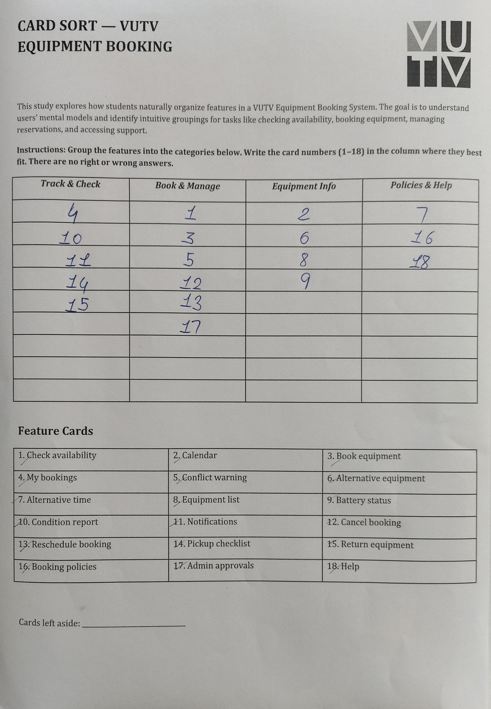
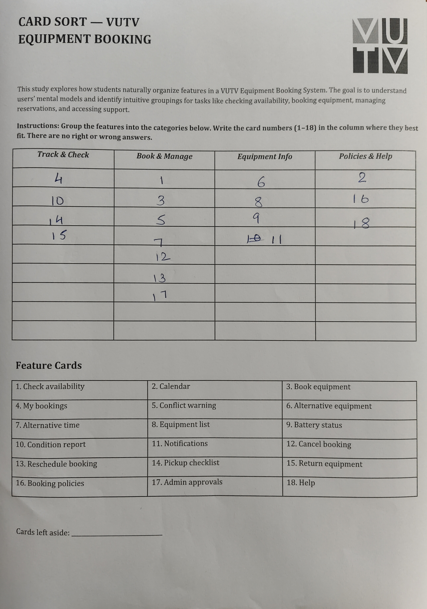
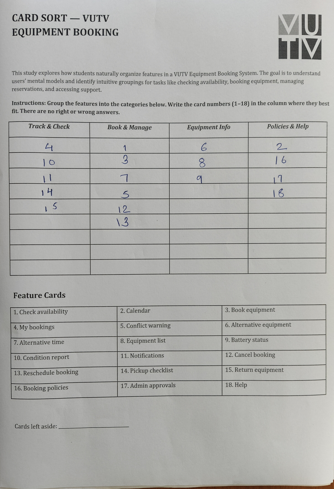
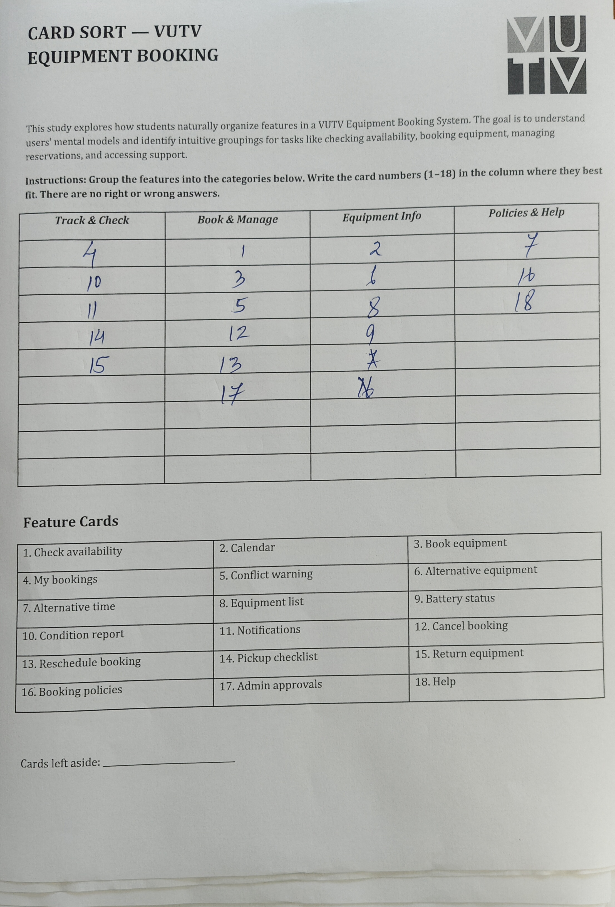
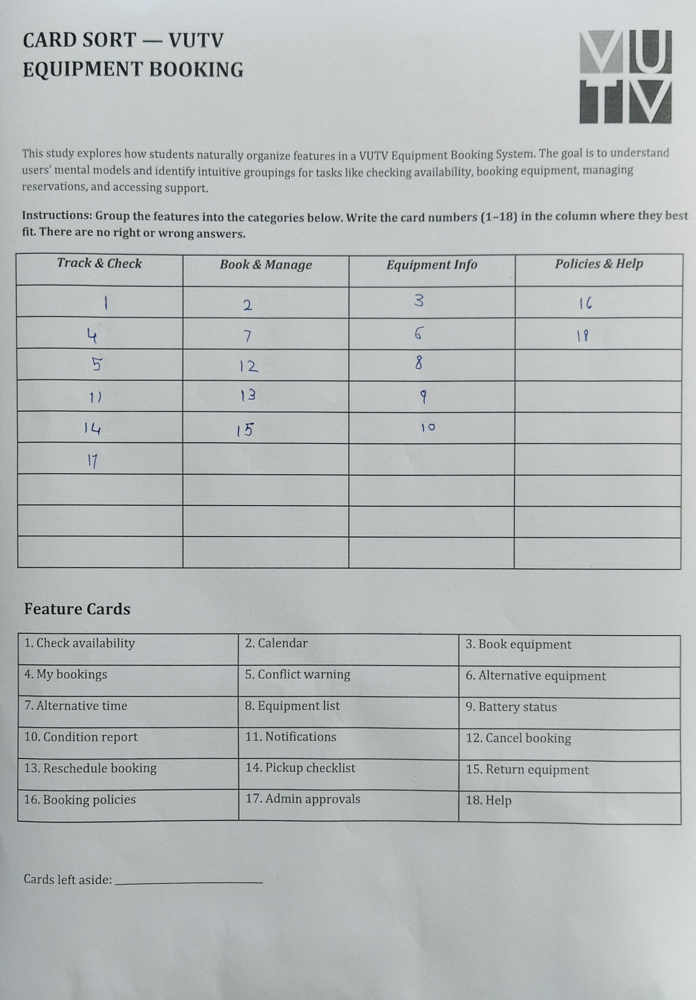
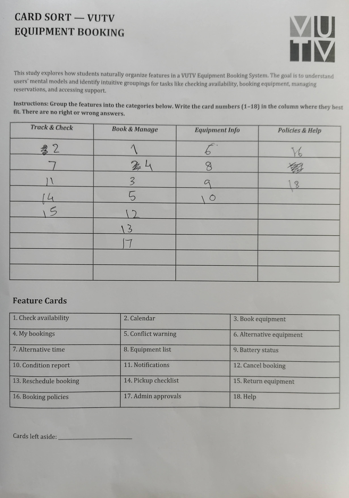
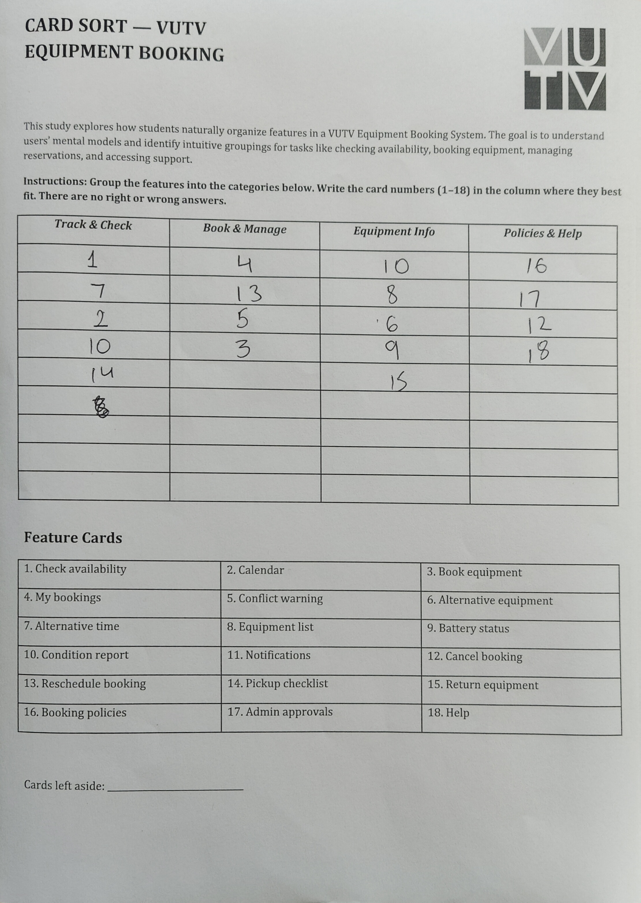
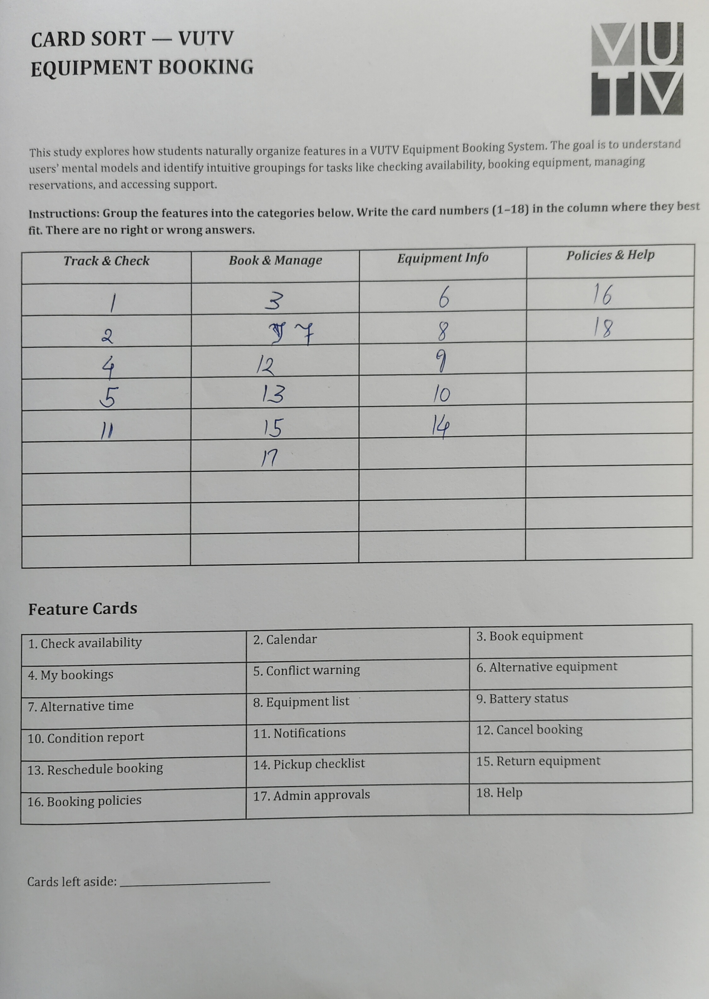
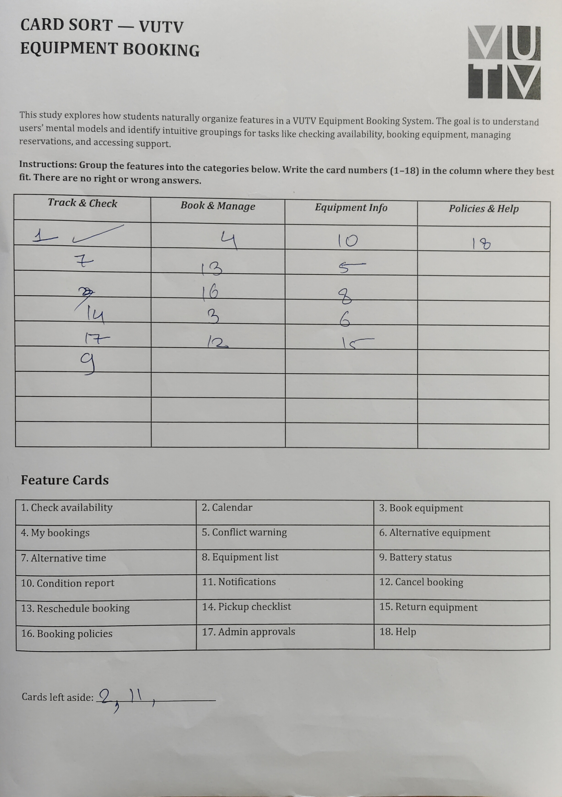
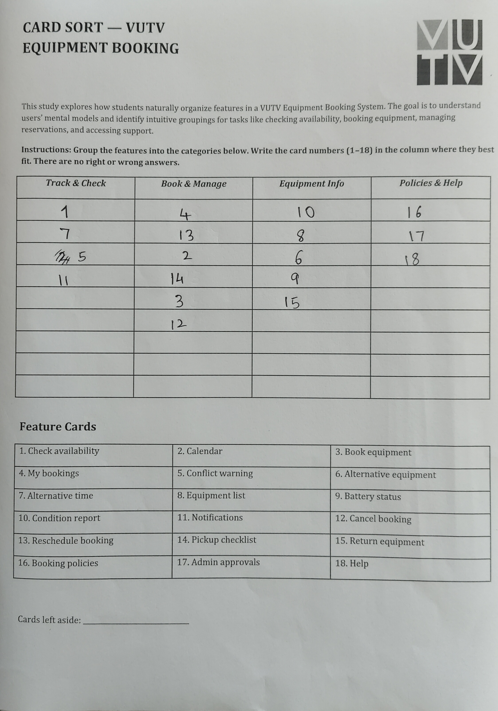

P1
Production team member
Has repeatedly found cameras assigned to other shoots, seen bookings fail when no email was sent, and lost shoot time to dead batteries.
Needs a dedicated schedule and booking portal.
Vijaybhoomi University · Student Media
How might we replace invisible email reservations with a shared, conflict-aware equipment schedule?
Read the researchOne room. Many teams. No shared system.
VUTV produces podcasts, interviews and campus coverage using a shared pool of cameras, microphones, lights and tripods. Other clubs and programmes depend on the same equipment.
Booking happens through email. Availability lives in an administrator’s inbox, memory or personal calendar-so the team often discovers a clash only when a shoot is about to begin.
The Problem Statement
Invisible, email-dependent reservations mean the production team learns about equipment clashes too late. Shoots slip, the Head of VUTV becomes a constant escalation inbox, and the overall content backlog grows.
Initial project challenge
Semi-structured conversations with two production members and the Head of VUTV surfaced the same dependency: no one can confidently see availability without asking someone else.
1.1 Observation log
It was 2:00 PM on a Thursday, and a VUTV production crew was preparing for a critical interview shoot. The producer had emailed the administrator three days prior to reserve the primary camera kit, but never received a formal confirmation. Assuming silence meant approval, the entire crew assembled in the studio on time.
When the producer opened the equipment locker, the camera was missing. It had been checked out earlier by another student club for an impromptu campus event. After a frantic fifteen-minute search and a distressed call to the Head of VUTV, the team managed to locate a backup camera. However, their relief was short-lived when they powered it on to discover the battery was completely drained. The shoot, originally scheduled to take an hour, was delayed by forty-five minutes, leaving the crew demoralised and the interviewee waiting.
Field observation · VUTV studio
1.2 Persona & research
Has repeatedly found cameras assigned to other shoots, seen bookings fail when no email was sent, and lost shoot time to dead batteries.
Needs a dedicated schedule and booking portal.
Reported a similar pattern of uncertainty and coordination friction, reinforcing that P1’s experience is not isolated.
Needs predictable access before planning a shoot.
Receives frustrated, last-minute calls when equipment clashes happen and becomes the person expected to resolve every exception.
Needs fewer reactive calls and shared ownership.
Evidence is presented as paraphrased interview notes because verbatim transcripts were not recorded. No quotation is attributed to a participant.
Primary persona
Arrive at a planned shoot with the right equipment ready to use.
Plans around academic work, relies on email, and sometimes assumes availability.
A camera is already out, the booking trail is unclear, or the battery is dead.
A shared schedule and self-service reservation flow with equipment readiness.
“I need to know the camera is available and ready before the crew assembles.” Persona voice · synthesis, not a verbatim quote
1.3 Empathy map

“Is the camera free?”
Someone must have checked.
Emails, waits, arrives, then calls the Head.
Uncertain → frustrated → demoralised.
1.4 User journey map
The worst moment is discovering the failure after the team, location and time have already been committed. The emotional journey below highlights the lowest point at the Collision stage.
.svg)
1.5 Core pain point
Invisible, email-dependent reservations mean the production team only discovers equipment clashes at the "Collision" stage, after the team, location, and time have already been committed. This late realization causes immense frustration, forces shoots to slip, turns the Head of VUTV into an escalation inbox, and grows the content backlog.
Core pain point · synthesised from user journey mapping
1.6 Pain → solution logic
| Observed pain | User story | Feature direction |
|---|---|---|
| No shared visibility | As a producer, I want to see what is booked so I do not plan a clash. | Shared calendar |
| Email is forgotten or opaque | As a producer, I want to reserve gear without waiting for an email reply. | Self-service booking |
| Clashes surface on shoot day | As a producer, I want a warning before I confirm an overlapping slot. | Conflict detection |
| Equipment is not shoot-ready | As a producer, I want readiness status before the crew arrives. | Battery & condition status |
10 participants sorted 18 feature cards into four pre-labelled groups. The sessions revealed a near-unanimous mental model: participants consistently separated booking actions from status monitoring, and expected equipment condition data (battery, condition report) to live with equipment browsing-not with booking management. These patterns directly informed the IA pivot.
2.1 Card sort
10 participants · 18 cards · Ask participants to name their groups and explain why.

P1
P2
P3
P4
P5
P6
P7
P8
P9
P10
2.2 Tree test
7 participants · 5 tasks · First click, path, backtracks, time and success recorded via custom web tool.

Overall task success: 33/35 (94%) · Overall directness: 27/35 (77%)
| Task | Target path | Success | 1st-click correct | Directness | Avg time |
|---|---|---|---|---|---|
| 1. Camera free? | Track & Check → Check availability | 5/7 (71%) | 4/7 (57%) | 3/7 (43%) | 26.0 s |
| 2. Reserve mic | Book & Manage → Book equipment | 7/7 (100%) | 7/7 (100%) | 7/7 (100%) | 11.2 s |
| 3. Battery check | Equipment Info → Battery status | 7/7 (100%) | 7/7 (100%) | 7/7 (100%) | 17.3 s |
| 4. Move booking | Book & Manage → Reschedule booking | 7/7 (100%) | 6/7 (86%) | 6/7 (86%) | 13.9 s |
| 5. Borrowing rules | Policies & Help → Booking policies | 7/7 (100%) | 4/7 (57%) | 4/7 (57%) | 18.2 s |
71% success, 43% directness - the only task with outright failures.
3 of 7 participants first-clicked Equipment Info or Book & Manage instead of Track & Check. When users think “camera”, they gravitate toward equipment browsing. The label “Track & Check” did not clearly signal availability queries.
100% success, 57% directness - all recovered, but 3 of 7 looked in the wrong category first.
Users associated “borrowing rules” with booking actions, looking under Book & Manage or even Equipment Info before finding Policies & Help.

The MVP focuses on preventing a failed shoot. Useful features are deliberately cut when they do not change that core outcome.
3.1 MVP priorities

Why the cuts? Notifications and conflict warnings improve recovery, but equipment browsing, self-service booking, readiness tracking, and a shared calendar are the four capabilities needed to stop the failure at its source.
3.2 DFV reality check

3.3 The 4 final Must Have's
A core directory of available gear so producers can see what exists before requesting it.
The system must allow producers to independently reserve available gear without waiting for email confirmations from administrators.
Crucial metadata like battery charge and equipment condition must be visible so crews don't arrive to find unusable gear.
Producers need a unified timeline view of equipment bookings to easily locate open slots and plan shoots visually.
The Minimum Viable Product (MVP) is a web-based scheduling portal that centralizes equipment visibility and automates conflict prevention.
By focusing strictly on the four must-have features, the MVP shifts the booking process from a reactive, email-based system to a proactive, self-serve model. It eliminates the core pain point of "invisible reservations" without over-engineering features like notifications or advanced analytics.
Success for this MVP is measured by a reduction in last-minute equipment clashes and a decrease in escalation emails to the Head of VUTV.
5.1 Authenticity & reflection
As Head of VUTV, I have received the calls that happen after the schedule fails. My perspective gives direct access to the operational problem-but it also creates bias.
To keep the project credible, production-member evidence is separated from my own perspective, paraphrases are labelled, and future IA decisions will be based on observed participant paths.